オニンギョウサマ/福島県船引町
郡山市の東に位置する福島県船引町。
リカちゃんキャッスルや阿武隈洞、それに以前本サイトで紹介した東堂山昭和羅漢にも程近い山あいののんびりした町だ。
ここにオニンギョウ様と呼ばれる4メートルもあるわら人形がいる。
恐らく日本最大のわら人形である。
わら人形というと丑三つ時に神社の裏の森で五寸釘をコーンコーンと。で、それを見かけたひにャあローソクを頭に巻いた鬼の形相の女性が振り向いて「見ぃ〜たぁ〜なぁ〜〜」・・・ってそのわら人形ではないので念のため。
ここでいうわら人形とは村内に悪いモノ（主に疫病）を入れさせないために村境に置く境界神なのである。
主に各村落の人々が共同作業でつくるものだ。
いってみればお寺の仁王様みたいなもので村内に侵入しようとする流行病を撃退するための境界神なのでヴィジュアル的にインパクトがあり、どこのオニンギョウ様も強烈なキャラ揃いだ。
このオニンギョウ様、見た目のインパクトの割には世間的な知名度は低く、私も前からその存在は知っていたのだが詳細は全く知らなかった。
しかし船引町のパンフレットを見ると、いきなり表紙にオニンギョウ様の強烈などアップ写真。地元では結構有名なようです。
ちなみに平成13年に県の重要無形民俗文化財に指定されました。
かつては船引町から西隣の三春町の磐城街道沿いには5体のオニンギョウ様があった。
その当時の5体の人形の事を指して五人形様＝オニンギョウ様と呼ばれるようになったらしい。
現在は屋形、朴橋、掘越の3集落に存在しているとの事だ。
で、屋形のオニンギョウ様に到着。
屋形のオニンギョウ様は街道から少し入った高台にある。
水際での疫病防護という役目を考えると正直いってずいぶん奥まった地味なところにあるなあ、という感じだが以前は別の場所に祀られていたらしい。
公園になっている高台からさらに階段を登っていくとオニンギョウ様の顔が見えてきた。
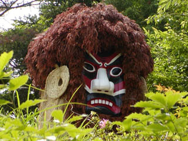
おおおお！
赤と白と黒の隈取りがほどこされた強烈な表情の面が木々の上にのぞく。想像以上に大きなものだ。
眉間にかなりリキ入ってます。
さらに階段を登っていくと・・・
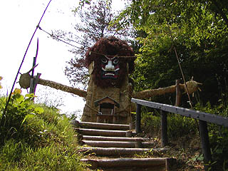
これがオニンギョウ様である。
高さは約4メートル、両手を大きく広げ通せんぼをしているようにも見える。
事前に心構えをしていても驚く大きさだから、知らないで集落の入口にこんなモノが立っていたらそりゃあ驚いただろう。
確かに悪疫避けとして効き目があるのかもしれない。
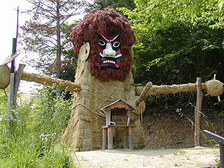
右手には槍、左には刀をたずさえ疫病を止めんと頑張っている。
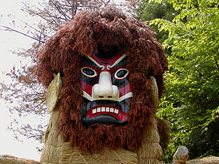
怒っているような表情の面は昭和35年に作り替えられたが文化5年の銘があるという。
毎年塗り替えているということで、大変奇麗な状態である。
面の周りは杉の葉で覆われており、ショウキさまのようだ。
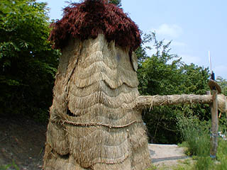
後ろ姿。
正面に比べてあっさりとしている。というか、後ろから見ただけでは一体なんなのかすら判らないであろう。
オニンギョウ様の仕組みは四隅に丸太を柱状に建て、それぞれの柱を横木で補強し、頭の部分にカゴを乗せる。
そこにムシロや藁、杉の葉等で矩体を覆っていく。
面や木材部分以外はみな新調するのである。これを毎年旧暦の3月に行うのだ。
つまり夜中にコーンコーン、で、見ぃたあ〜なあ〜、のわら人形とは構造が違うのである。
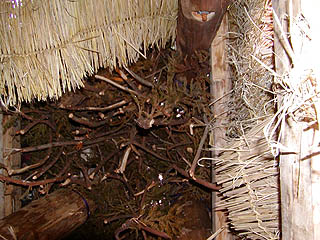
で、背中の隙間からカメラを突っ込んで内部を真上に向かって撮影。
外側は胴体のムシロの部分。中央は杉の葉の部分。
中は入れるようにはなっていないが、人ひとりが充分立って入れる位のスペースがある。
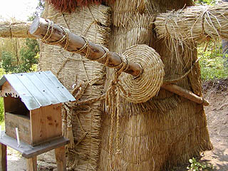 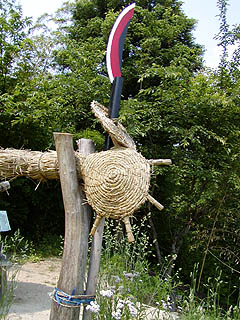
刀のサヤや掌、耳などは稾縄を丸めて作ってある。あくまでも昔ながらのエコロジカルな素材で構成されているのがミソだ。
次に訪れたのが朴橋のオニンギョウ様。
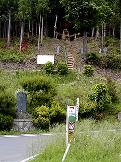
街道を見下ろすように高台に立っている。やっぱり疫病防ぎの神様ならこうでなくちゃ。
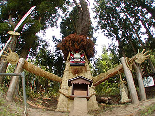
ここのオニンギョウ様も通せんぼのポーズである。
作り方や構造、意匠や持ち物もかなり屋形のオニンギョウ様に似ている。
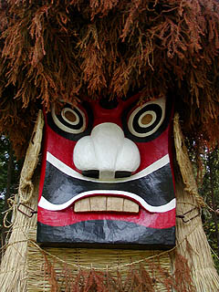
面はビックリしたような目がややコミカルな印象を与える。
松の葉のヒゲが申し訳程度で四角いエラが目立つ。目の穴が抜けているところもイマイチ怖さに欠ける要因と見た。
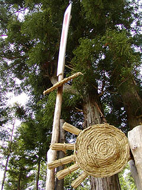 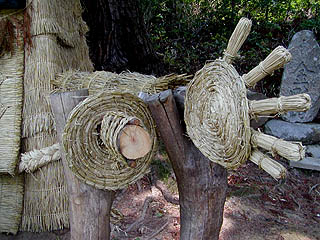
手のディテール。掌や指、槍や刀の鍔の処理など細かいところまで良く似ている。
あっ
槍が手から離れちゃってますよお〜
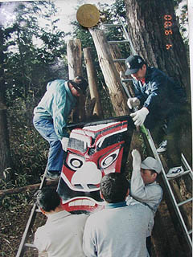
オニンギョウ様の傍らに近年のオニンギョウ様奉納の新聞記事や写真等が掲示されていた。
それによると平成14年に面の新調が行われたそうだ。
ここも毎年旧暦の3月に衣替えが行われるという。
その際、取り替えられた衣装はどうなったかというと・・・
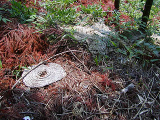
山中に放置されてました・・・
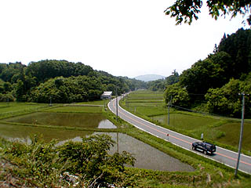
オニンギョウ様の位置から見た下界の様子。
オニンギョウ様は日夜この街道から悪いモノが来ないようにガードしているのだ。
最後に掘越のオニンギョウ様。
このオニンギョウ様は明石神社の境内にある。
ここのオニンギョウ様、実は面だけがこの神社に残っていて実際にオニンギョウ様作りは途絶えてしまっていた。
ところが平成4年に突然オニンギョウ様作りが復活した。明治40年以来87年振りの事だそうだ。
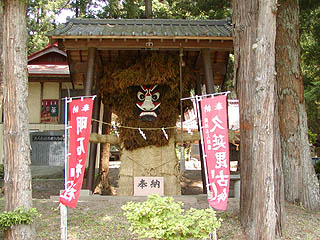 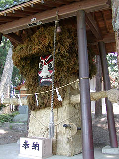
これが掘越のオニンギョウ様である。
他のオニンギョウ様と違い覆い屋がかかっている。この辺、87年振りの復活への気合いが見て取れる。
見たところ新しそうなのでその後も毎年オニンギョウ様の衣装替えをやっている模様である。
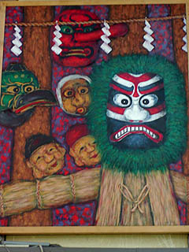
神社の建物に掲げられていた絵。
オニンギョウ様復活記念画なのだろうか。
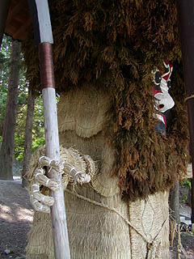 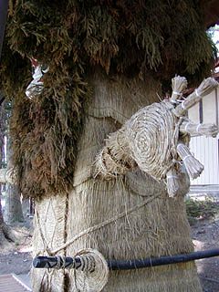
手や持物のディテールも他の2つのオニンギョウ様に良く似ている。
髪の毛のボリュームはここのが一番かな。
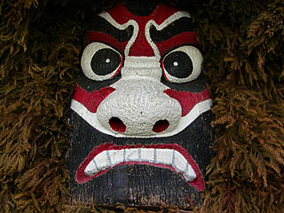
顔は怖いのか面白いのか微妙な表情。一寸マンガっぽい表情はどこかユーモラスでもある。目の間の横皺がイイ感じ。
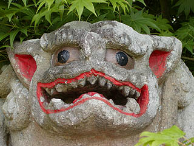
ちなみにこの明石神社にいた狛犬。こっちの方が怖いですね。
これでオニンギョウ様巡りは終了。
それにしてもこのオニンギョウ様という神様、素材は純和風なのにどこか日本離れした雰囲気が漂っている。
勿論、面の意匠が日本離れしているというのもあるのだが最大の要因はその大きさではなかろうか。
一般的に我々が考え得る人形というものは精々等身大位のものだが、このオニンギョウ様は約4メートル。
その大きさこそが最大の特徴であり、最も私の興味を引くポイントでもあった。しかもかつては5体もあり、それぞれが毎年衣装替えをしていたのだ。
このオニンギョウ様は神道系の神様なのではっきりした事は言えないのだが「大きい信仰対象を作る」という精神性は大仏に通ずるような気がするんですけど、どうでしょうか？
おまけ
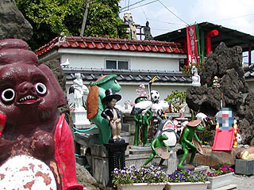 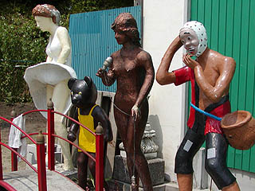
船引町でこんな素敵なコンクリート彫刻群を発見。
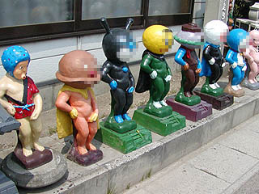
小便小僧がお好きらしく手当りしだいに有名キャラを小便小僧化している。
オニンギョウ様を作るセルフメイド魂がここにも宿っていると見たぞ。
2003.6.
珍寺大道場 HOME